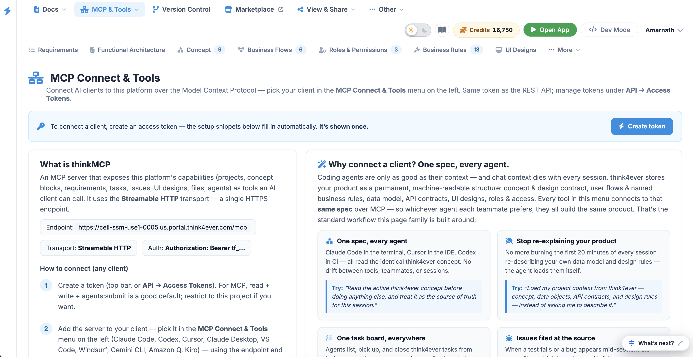
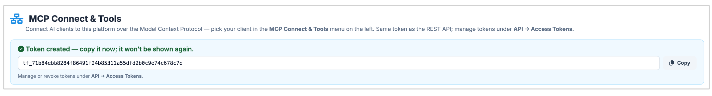

Overview
The MCP Connect & Tools panel allows users to connect external AI clients (coding agents, IDE extensions, or terminal assistants) to the platform using the Model Context Protocol (MCP). By serving as a centralized context and tool provider, it ensures that any connected AI client has direct, real-time access to the product spec, concept blocks, data models, tasks, and requirements.

Top Navigation & Action Bar
- Breadcrumb Navigation: Shows the current location or path within the workspace
- Header Section: Displays the main title MCP Connect & Tools alongside a brief subtitle explaining that AI clients connect via MCP using the same token as the REST API.
-
Token Management:
* A blue "Create token" button is located in the upper right corner.
- An informational banner reminds users that the setup snippets below populate automatically once a token is generated, and that the token is only shown once.
- Credits & Profile: Displays available credits (e.g., Credits 15,941) and a toggle to "Switch to Developer Mode."
Technical Setup & Connection Details ("What is thinkMCP")
This section provides the exact technical configuration details required to link an external AI client to the platform’s MCP server.
-
Server Endpoint Details:
- Endpoint: The dedicated URL string for the MCP connection (e.g., https://cell-ssm-use1-0005.us.portal.think4ever.com/mcp).
- Transport Type: Specifies Streamable HTTP as the single HTTPS endpoint transport mechanism.
- Auth: Specifies the authentication header format (Authorization: Bearer tf_...).
-
Connection Instructions:
-
Create a token:
Generate a token via the top bar or API -> Access Tokens. Recommended
scopes for MCP are
read + write + agents:submit. - Add the server to your client: Configure the endpoint and token within your chosen AI tool (e.g., Claude Code, Cursor, VS Code, Windsurf, Gemini CLI, etc.).
- Verify the tools load: Navigate to the Tools & Test menu entry to list active tools and run a live check.
-
Create a token:
Generate a token via the top bar or API -> Access Tokens. Recommended
scopes for MCP are
- Compatibility Warning Note: A highlighted warning banner alerts users that native remote-HTTP MCP support varies by client. If a client only supports local (stdio) servers, users should use the mcp-remote-bridge or check client-specific documentation.
How to Create a Token
To connect your external AI clients (like coding agents, IDE extensions, or terminal assistants) to think4ever via the Model Context Protocol (MCP), you must first generate a secure access token.
Accessing the Creation Utility
Navigate to the MCP Connect & Tools section using the left sidebar menu under the active project workspace.
Step-by-Step Generation
Locate the Action Button: Find the blue Create token button located in the upper right-hand corner of the main dashboard area.

Copy the Value Immediately: for the green success banner titled "Token created — copy it now; it won't be shown again."
Secure the Token: Click the Copy button next to the text field displaying your new token string (e.g., tf_71b84ebb8284f...).
⚠️ Important Security Note: This token is only shown once upon creation for security purposes. Make sure to paste it directly into your AI client configuration or save it securely immediately. If you lose it, you will need to generate a new one.
Token Scope & Management
Recommended Scopes: For a typical MCP configuration, the token uses
read +
write + agents:submit permissions by default.
You can restrict the token to specific projects if needed during manual creation.
Revoking and Managing: If you ever need to audit, manage, or revoke existing tokens, navigate to the top-bar settings or follow the path API → Access Tokens.